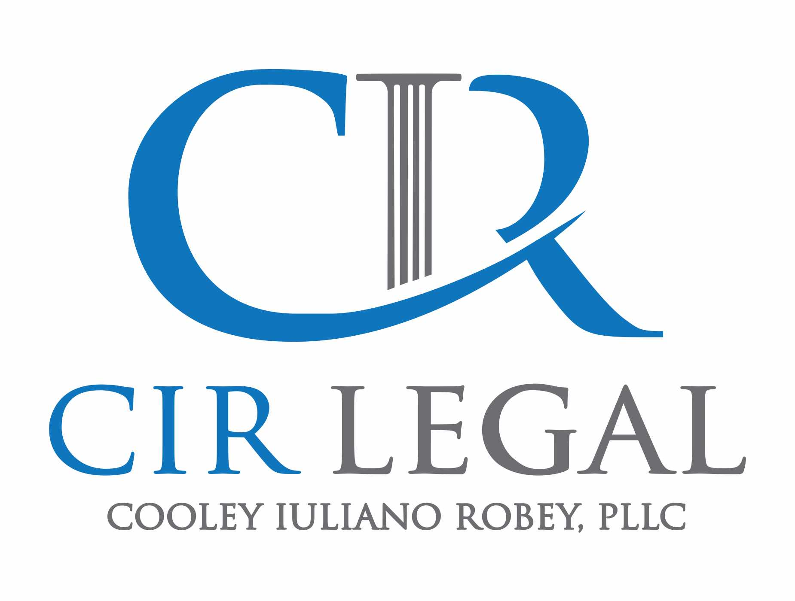

News
Services
Legal Education Lexington
Practice Areas Lexington
Professional Conduct Lexington
Court System Lexington
Law Firms Lexington
Legal Education Lexington
About Us
Cooley Iuliano Robey
1) How to Identify the Right Lawyer for Your Legal Needs
Sep 16, 2023
Finding the right lawyer for your legal needs can be a daunting task.(!) With so many lawyers to choose from, it can be hard to decide who is best suited to handle your case.. Fortunately, there are several steps you can take to ensure that you find a qualified and experienced lawyer for your situation.
First and foremost, before hiring a lawyer, it is essential to understand what kind of legal help you need.
2) How to Maximize Your Outcomes with the Help of a Professional Lawyer
Sep 16, 2023
No matter what type of legal issue you're facing, it's important to follow up after appointments with your attorney. (This way,) you can ensure that all steps needed in order to help maximize your outcome are taken.. Before leaving the office, ask questions and make sure you have a good understanding of the process going forward.
Legal Ethics and Professionalism
Sep 16, 2023
As a lawyer, it is essential to adhere to ethical behavior.. This is not only for preserving one's profession but also for maintaining the trust of clients and colleagues.
The Role of Lawyers in Society
Sep 16, 2023
Lawyers play an essential role in our society.. They are responsible for ensuring fairness and justice in our legal system.
What Is the Key to Getting the Best Outcome in Your Legal Case?
Sep 16, 2023
When it comes to legal cases, getting the best outcome is key!. Negotiating a successful outcome requires planning, research and taking into account all of the potential scenarios involved. (Contractions) It's no wonder that so many people struggle with navigating the legal system!
What Is the Secret to Finding the Perfect Lawyer For Your Needs?
Sep 16, 2023
The secret to finding the perfect lawyer for your needs is to be thorough and patient during the search process.. It's important to do research, ask for recommendations (from family, friends or colleagues) and compare lawyers before making your final decision!